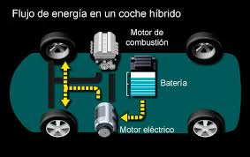

coches hibridos es la facilidad de nuevos caminos en la vida y cuidar nuestro planeta tenemos que tener nuestro medio ambiente en buen estado
Como funciona la tecnologia hibrida
La tecnología híbrida funciona combinando dos o más fuentes de energía para mejorar la eficiencia y el rendimiento. Aquí te explico cómo opera en los vehículos y en sistemas de energía:
vehiculos hibridos
motores Combinados: Utilizan un motor de combustión interna (de gasolina o diésel) junto con un motor eléctrico.
Baterías: El motor eléctrico se alimenta de una batería recargable, que se carga a través de:- Frenado Regenerativo: Captura la energía que normalmente se perdería durante el frenado y la utiliza para recargar la batería.
- Motor de Combustión: También puede generar energía para recargar la batería mientras el vehículo está en movimiento.
- Solo eléctrico: Para trayectos cortos, el vehículo puede funcionar solo con el motor eléctrico, reduciendo el consumo de combustible.
- Híbrido: Ambos motores trabajan juntos, lo que optimiza el rendimiento y la eficiencia.
- Solo combustión: En situaciones que requieren más potencia, como en carreteras o al acelerar rápidamente, el motor de combustión puede activarse completamente.
- Integración de Fuentes: Combina fuentes de energía renovable (solar, eólica) con generadores de energía convencionales (como diésel o gas).
- Almacenamiento: Utiliza baterías o sistemas de almacenamiento para acumular energía cuando hay un excedente de producción (por ejemplo, en días soleados) y liberarla cuando la demanda es alta o la producción baja.
- Control Inteligente: Un sistema de gestión controla el flujo de energía, decidiendo cuándo usar cada fuente para maximizar la eficiencia y minimizar costos.
- Eficiencia Energética: Reducción del consumo de combustible y emisiones.
- Flexibilidad: Capacidad de adaptarse a diferentes condiciones de operación.
- Sostenibilidad: Contribuye a la reducción del impacto ambiental.
Modos de Funcionamiento:
Sistema de Energía Híbridos
Beneficios
En resumen, la tecnología híbrida combina lo mejor de dos mundos, optimizando el uso de recursos y promoviendo una mayor sostenibilidad.
